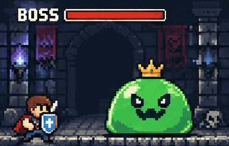

Author: ailingqu / awesome-ai-gif-prompts · original source
Author reports GPT Image 2.6; not authenticated / 作者声明，未独立认证
Source records via=chatgpt-image-2.com; exact request unknown / 来源记录网站生成 · GIF hashes/frames checked; frame sheet reviewed; generation not reproduced / 未复现
GIF and published prompt by ailingqu / awesome-ai-gif-prompts, CC BY 4.0: https://creativecommons.org/licenses/by/4.0/ . Original source: https://github.com/ailingqu/awesome-ai-gif-prompts/blob/a20f88b18a9abe8cd1531fb8a8e738a5a4701ce2/gifs/pixel-slime-boss.gif . Explicit source grant: https://github.com/ailingqu/awesome-ai-gif-prompts/blob/a20f88b18a9abe8cd1531fb8a8e738a5a4701ce2/README.md#license . License text: https://github.com/ailingqu/awesome-ai-gif-prompts/blob/a20f88b18a9abe8cd1531fb8a8e738a5a4701ce2/LICENSE . GIF bytes and prompt body unchanged; bilingual annotations and metadata added. No endorsement or rights to unrelated third-party trademarks or likenesses are implied.

Published prompt body by ailingqu from https://github.com/ailingqu/awesome-ai-gif-prompts/blob/a20f88b18a9abe8cd1531fb8a8e738a5a4701ce2/data/prompts.json . The source describes its prompts as rewrites inspired by the web; this is not claimed as the upstream author's verbatim prompt. The repository script's loop suffix is documented separately in post.md, not added to this original prompt body. No exact historical submitted request has been independently verified. / 以下仅为 ailingqu 公开提示词正文；脚本后缀单独列出，实际提交请求未独立核实。
An 8-bit boss battle: a giant green slime boss with a tiny crown bounces and squishes in the center of a dungeon arena, its health bar at the top flashing, while a small pixel hero on the left raises a shield. Retro NES pixel art, dark stone background.